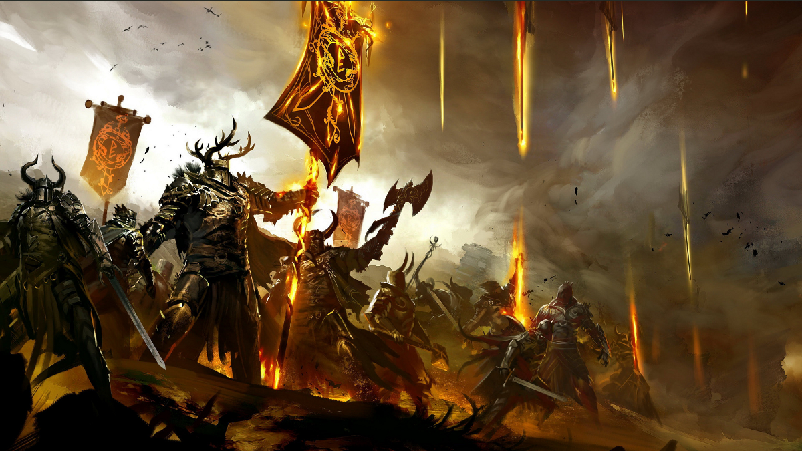

01.12.2018
Newsy | Nadchodzące zmiany na WvW
Zmiany na WvW - Aktualizacja 2018
Hej wszystkim!
Chciałbym przekazać krótką aktualizację na temat zmian w strukturze światów na WvW. Minęło kilka ładnych miesięcy od czasu ostatniej aktualizacji i cieszymy się, że możemy powiedzieć, że w tej kwestii nastąpił znaczny postęp. Udało nam się usunąć kilka zasadniczych problemów i błędów, dzięki czemu możemy przedstawić niektóre z naszych głównych celów.
Nad czym pracuję?
Pracuję głównie nad zmianami w strukturze światów na WvW, poświęcając trochę czasu grze na żywo. Te dodatkowe zadania obejmują ulepszenia niektórych systemów, usuwanie błędów i trochę wewnętrznej obsługi zespołu. Pracowałem nad niektórymi zadaniami spod znaku Quality of Life (wygody, jakości życia [przyp. Tłum.]), takimi jak usunięcie zaniku participation poza WvW. Mam nadzieję, że wkrótce będziemy mogli ogłosić niektóre z innych rzeczy, nad którymi pracowaliśmy. Jak już wcześniej omawiałem, pracujemy nad grą na żywo, więc zawsze jest wiele nieustannie zmieniających się elementów.
Co się działo z World Restructuring?
Spędziliśmy trochę czasu od aktualizacji z lipca, pracując nad zlikwidowaniem pozostałych zadań z zakresu tzw. backendu. Koncentruję się na tym, żeby te kwestie ostatecznie zamknąć. Obecnie wiele zadań realizuję odzielnie, choć niektóre rzeczy wciąż odstają. Kiedy już będę miał gotowe wszystkie elementy składowe, rozpocznę proces ich łączenia. Chciałbym podkreślić, że chociaż wykonaliśmy wiele pracy i dokonaliśmy naprawdę dobrych i ekscytujących postępów, nadal jesteśmy daleko od wprowadzenia zmian w strukturze światów na WvW i Sojuzszów.
Jednym z elementów, który obecnie działa w sferze back-endu, jest koncepcja gildii WvW, oraz możliwości ich wyboru przez graczy. Testujemy to za pomocą poleceń debugowania, ponieważ nie dysponujemy żadnym interfejsem użytkownika, ale istnieją warstwy komunikacyjne, a także aspekty przechowywania tych danych. Daje nam to trochę danych niezbędnych do grupowania ludzi w zespoły przy doborze matchup'ów.
Mówiąc o matchmakerze, ukończyłem bardzo podstawową implementację jego mechanizmu, który będzie odpowiedzialny za przerzucenie ogromnej listy graczy pogrupowanych według gildii WvW, a następnie ulokowanie ich w drużynach, utrzymując jednocześnie równą wielkość poszczególnych zespołów. Jest jeszcze wiele do zrobienia, aby móc mówić o systemie, zdolnym do obsługi wszystkich możliwych przypadków, które chcemy uwzględnić, ale dotychczasowa praca i liczby wyglądają bardzo obiecująco.
Przyjmujemy pragmatyczne podejście do budowania i testowania poszczególnych części restrukturyzacji światów. Już teraz testujemy niektóre z systemów w izolacji przy użyciu danych i środowiska na żywo. Korzystając z tej metody, wykryliśmy już błędy i przeszkody, które byłyby trudne do wyśledzenia i naprawienia za pomocą systemu całościowego.
Nie podejmowaliśmy zbyt wiele działań po stronie front-ednu, a więc od strony gracza. Nadal koncentrujemy się na budowaniu solidnego zaplecza, do którego stworzymy w pełni funkcjonalny interfejs. Praca jest już w toku i gdy tylko będziemy mieli coś bardziej namacalnego w kontekście interfejsu, zaczniemy omawiać kwestię, w jaki sposób chcemy pokazać wszystkim nowe błyskotki (ang. shninies) [przyp. tłum.].
F. A. Q.
Jakże mogłaby się obyć restrukturyzacja światów, bez kompletnego FAQ?
1. Czy istnieje aktualizacja systemu Sojuszu (World Restructuring)?
Tak, oto on! ;)
2. Czy gracze z UE i NA mogą dołączyć do tego samego sojuszu i grać WvW razem?
Nie. Serwery UE i NA nadal będą rozdzielone i będą miały własne zespoły. Choć technicznie byłoby możliwe, żeby gildia lub sojusz miały członków zarówno na serwerach NA, jak i UE, to system będzie ich umieszczał w oddzielnych bazach danych.
3. Czy zakupienie dodatków będzie wymogiem żeby dołączyć do sojuszu?
Nie.
4. A co z gildiami spoza WvW, które używają swojej liczebności, aby wpływać na wybór instancji mapy poza WvW?
Ta zmiana nie będzie ich dotyczyła. System wybierający instancje map nie uwzględnia map poza WvW.
5. Jak system sojuszu zamierza naprawić cokolwiek, skoro ludzie nadal będą mogli dokonać transferu?
Obecnie planujemy zmienić docelową „lokację”, na którą pozwalamy ludziom się transferować, oraz lepiej przystosować ograniczenia transferu dla tych z nich, które można określić mainem przeludnionych. Niektóre szczegóły dotyczące tego, jak to będzie działało, znajdują się w oryginalnym wpisie dotyczącym restrukturyzacji światów.
6. Czy przewaga wynikająca z wykorzystywania różnic w czasie pomiędzy strefami czasowymi nadal pozostanie nierozwiązanym roblemem?
To prawda, że w początkowym wydaniu restrukturyzacji światów nie planujemy uwzględniania stref czasowych podczas alokacji graczy. Po części wynika to z faktu, że najpier musimy zadbać o podstawowe aspekty systemu i zebrać dane o tym, jak on w ogóle dział, biorąc pod uwagę wskaźniki, które stosujemy dla wymairowania równowagi między światami. Chcemy porównać jabłka z jabłkami, aby uzyskać jak najbardziej przejrzyste informacje. To także pozwoli nam mieć solidną podstawę do porównania wyników w przypadku modyfikacji tychże wskaźników. Omawiamy także inne sposoby radzenia sobie z grą "poza godzinami pracy", dlatego warto czekać na dodatkowe informacje, ponieważ już wkrótce możemy je udostępnić.
7. Czy w analizach liczności populacji poszczególnych światów uwzględniane są tylko godziny szczytowej aktywności na WvW, czy cały cykl dobowy?
Używamy tylko godzin szczytowej aktywności na WvW podczas szacowania populacji.8. Ile sojuszy może należeć do jednego zespolu?
Nie ma tu jednoznacznej odpowiedzi, poza "jakkolwiek wiele musi być". Nacisk kładziony jest przede wszystkim na zrównoważenie populacji, a nie na ograniczanie liczby sojuszy na zespół.
9. Czy planujesz aktualizację interfejsu API?
Tak. Konieczne będzie uaktualnienie interfejsu API w celu obsługi nowego systemu. Poza tym nie dysponuję bardziej szczegółowymi informacjami.
10. Czy reprezentowanie gildii jest tożsame z jej wybraniem jako gildii WvW?
Nie, reprezentowanie jest niezależne od wyboru twojej gildii WvW. Nadal będziesz mógł reprezentować dowolną gildię w WvW bez konieczności zmiany świata, w którym system cię umieścił.
11. Co dalej? Co planujecie po restrukturyzacji światów?
Uff! Nie powinniśmy wyprzedzać samych siebie. Restrukturyzacja światów to tylko jedno z wielu wyzwań, które przed nami stoją, skupy się więc na rzeczach dotyczących tego zagadnienie, a nie wybiegajmy w przód. Są to rzeczy, o których nie jesteśmy jeszcze gotowi lub wręcz nie jesteśmy w stanie dyskutować, ale damy wam znać, gdy tylko będziemy mieli coś więcej do przekazania.
Źródło: Oficjalne forum Guild Wars 2 by Raymond Lukes
Poniższe informacje nie są częścią tłumaczenia i nie są częścią oficjalnego stanowiska prezentowanego przez ArenaNet.
W świetle poniższyc informacji już dziś informuję, że jako gildia (chodź oczywiście nie ma takiego przymusu) podłączamy się w kwestiach WvW pod gildię [quaK]. Marked by [Fury] nie będzie miała statusu gildii WvW. Wszystkim zainteresowanym dołączeniem do gildii [quaK] polecam zgłosić się do climonite.8537. Z prywatnej konwersacji wiem, że mogą dołączyć się również osoby spoza Gandary, które chciałyby grać w tej ekipie po wejściu w życie zmian.
Jednocześnie z ważnych informacji, które pojawiły się na grupie Guild Wars 2 Polska na facebooku wynika, że na dzień dzisijeszy nie ma możliwości zakupu gemów z oficjalnego źródła poza płatnościami in-game, jednak planowane jest bawiązanaie współpracy z nowymi partnerami dzięki czemu legalny zakup gemów będzie przystępniejszy. Dla przypomnienia ostatni bastion oficjalnej sprzedaży padł w październiku 2018 (mowa o fabrykakluczy.pl).
A na koniec jak zawsze powiązany tematycznie kawełek (od Sammpo ft. Sharm)